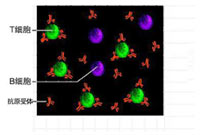

- 银屑病分期/SOMATQTYOE/ >
 寻常型
寻常型- |
- 红病型
- 脓包型
- |
- 关节型
- 银屑病分型/PERIQDIZATIOQN
- 进行期
- |
- 静止期
- 消退期
- |
- 其他
111我院白癜风专家林红银主任：细谈白癜风芬芳地方
随着夏季的来临，白癜风不断高发。很多网友在网上咨询白癜风为何高发？得了白癜风怎么办？怎样才能有效...[查看详情]
222我院白癜风专家林红银主任：细谈白癜风芬芳地方
随着夏季的来临，白癜风不断高发。很多网友在网上咨询白癜风为何高发？得了白癜风怎么办？怎样才能有效...[ 查看详情]
333我院白癜风专家林红银主任：细谈白癜风芬芳地方
随着夏季的来临，白癜风不断高发。很多网友在网上咨询白癜风为何高发？得了白癜风怎么办？怎样才能有效...[查看详情]
- 我院白癜风专家林红银主任：细谈夏白癜风吩咐你的
- 健康报：卫生部召开2014银屑病规范诊疗
- 我院白癜风专家林红银主任：细谈夏白癜风吩咐你的
- 健康报：卫生部召开2014银屑病规范诊疗
- 我院白癜风专家林红银主任：细谈夏白癜风吩咐你的
“3D净血细胞祛癣疗法”银屑病规范诊疗大会指定规范诊疗技术 1115500950
为积极促进银屑病的医学与诊疗技术研究、更好的引领银屑病诊疗技术领域的快速发展，由中华中医药学会主办，主题为“促进国内医学交流，随着 夏季的来临，白癜风不断高发。很多网友在网上咨询白癜风为何高发？得了白癜风怎么办？怎样才能有效...[查看详情]
- CCTV专家教你正确认识银屑病
- CCTV专家教你正确认识银屑病
- CCTV专家教你正确认识银屑病
- CCTV专家教你正确认识银屑病
汇聚国内顶级银屑病专家，铸就专科典范 戴礼 罗兰珍 028-62066666
- 中华医师协会皮肤性病分会常任理事
- “3D净血细胞祛癣疗法”科研带头人
- 四川省皮肤病国际技术研究委员会委员
- 中华银屑病名医堂专家组成员
- 中华医师协会皮肤性病分会常任理事
- “3D净血细胞祛癣疗法”科研带头人
- 四川省皮肤病国际技术研究委员会委员
- 中华银屑病名医堂专家组成员
 “3D净血细胞祛癣疗法”—银屑病“规范化诊疗的典范
1115500950
“3D净血细胞祛癣疗法”—银屑病“规范化诊疗的典范
1115500950

以成都白癜风医学研究院附属医院林永祥教授领头研创"蓝氧祛白疗法"实现了中西医学的完美结合，以自身血液化功效，阻断白癜风发病 根源，开创了血液祛白新纪元，以复发、无伤痛治愈被北美国家相继引进临床治疗中去，让中白癜风诊疗从此登上国际舞台，成为国内首项获 得世界卫生织（WTO）大力推广的白癜...[查看详情
- 步骤一 确定患者皮损部位，通过3D断层成检测进行检查
- 步骤二 患者病变皮肤组织3D影像，实现对T、B细胞定位检测
- 步骤三 最后在共聚显微镜下显示的皮损病变细胞
-  检测结果表明 T、B细胞3D图是实现临床细胞治疗最有效途径，病灶部位放大10万倍
银屑病的变化较多，在不同时期可有不同表现。皮疹小的只有针头大，大的可以覆盖大片部位；皮疹数目不定，有的只有1个，有的极多；皮疹形状也不定，呈圆形，地图形或不规则形；个人的自觉症状不同，有的有剧痒，有的几乎不痒，而一般健康通常不受影响。3D自体净血疗法利用“3D皮肤断层检测”...[详细]
国家“火炬计划”重点皮肤病科研医学项目联合成都银屑病研究院附属医院研发的银屑病3D净血细胞祛癣疗法——免疫靶向治疗，突破传统银屑病治疗疗程长、不彻底、易复发等技术瓶颈，实现了银屑病诊疗彻底、高效的医学奇迹。3D净血细胞祛癣疗法自推出后受到国内外医学界广泛关注，临床治疗银屑病创下当前治疗最高标准记录，高达98.7%的临床有效率。银屑病3D净血细胞祛癣疗法由16项核心，其中包括...[详细]


针对银屑病的不同患病人群，部位，临床病例特征及患者的皮损程度的不同进行精准的分型分度治疗...[详情]
患者血液中的毒素清除后，快速恢复脏腑正常功能，促进银屑病治疗药物吸收和转化，加快健康速度...[详情]
皮肤淋巴细胞相关抗原CLA-PSGL-1和CLA-CD43复合体与皮肤微血管表达的E-和P-选择素结合修复调节性B细胞...[详情]

T淋巴细胞活性增强会导致皮肤局部坏死和代谢速率增加，形成皮损。抑制T淋巴细胞活性，有效降低其发病几率...[详情]

直接作用于病灶部位，渗透于细胞之中，建立稳定的血液净毒环境，最终达到标本兼治，有效抑制复发的目的...[详情]

为人体筑起健康屏障，防止调节性B细胞病变，长效抑制T淋巴细胞活性，从而实现银屑病的抗复发治疗...[详情]
| 传统疗法 | PK | 3D净血细胞祛廯疗法 |
| 痛苦大 | 痛苦度 | 无痛苦 |
| 伤害大，易出血，辐射大，杀伤性强，有刺激 | 并发症 | 无创伤，不出血，对皮肤无伤害，无并发症 |
| 皮肤易破损留下疤痕 | 有无疤痕 | 无疤痕，不伤害 |
| 否 | 是否可视 | 全程超导可视 |
| 治疗次数多，不能彻底治愈 | 治疗效果 | 临床康复周期缩短38.9%，临床抗复发增加71.1%，临床治愈率提升至98.7%，有效率100% |
| 推荐效果 |
- 三级检测，锁定病因 detection and lock etiology
- 五大治疗优势 five major advantage
- 三大治疗准则 three treatment guidelines
- 八大康复项目 eight rehabilitation project
- PK传统疗法 traditional pk therapy

5万余例康复患者的一致反馈：疗程短、无复发 028-62066666
半年白斑在我院治愈银屑病的奇迹
【基本资料】患者信息：李梅斯蒂芬 斯蒂芬（化名），女，14岁...[详情]
半年白斑在我院治愈银屑病的奇迹
【基本资料】患者信息：李梅斯蒂芬 斯蒂芬（化名），女，14岁...[详情]
半年白斑在我院治愈银屑病的奇迹
【基本资料】患者信息：李梅斯蒂芬 斯蒂芬（化名），女，14岁...[详情]
半年白斑在我院治愈银屑病的奇迹
【基本资料】患者信息：李梅斯蒂芬 斯蒂芬（化名），女，14岁...[详情]
Psoriasis Health Forum 1115500950
手臂白癜风有哪些早期症状表现?我们身边会经常发现手臂长白斑的白地方地方地方....[详细]
当脖子上白斑扩散越来越大该怎么办[我要咨询]
当脖子上白斑扩散越来越大该怎么办[我要咨询]
当脖子上白斑扩散越来越大该怎么办[我要咨询]
当脖子上白斑扩散越来越大该怎么办[我要咨询]
手臂白癜风有哪些早期症状表现?我们身边会经常发现手臂长白斑的白地方地方地方....[详细]
当脖子上白斑扩散越来越大该怎么办[我要咨询]
当脖子上白斑扩散越来越大该怎么办[我要咨询]
当脖子上白斑扩散越来越大该怎么办[我要咨询]
当脖子上白斑扩散越来越大该怎么办[我要咨询]
公益事业
/Public welfare undertakings
临床科研
/Clinical research
领导题词
/The leadership of the inscription